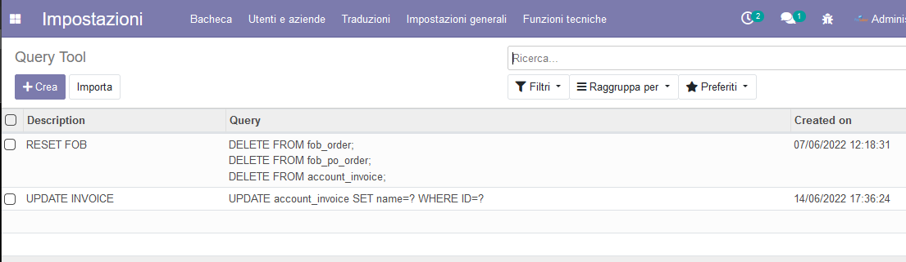
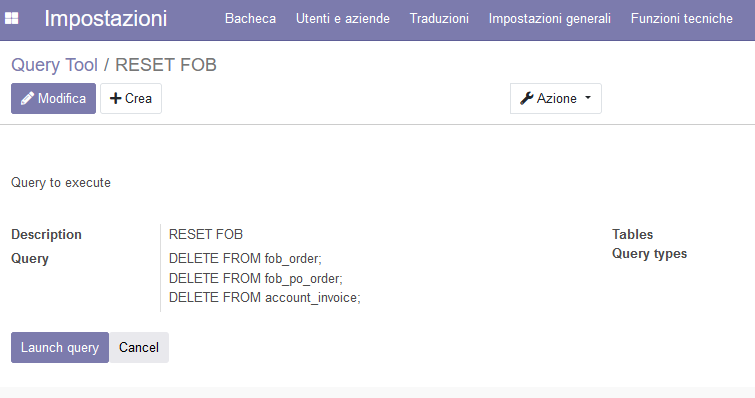
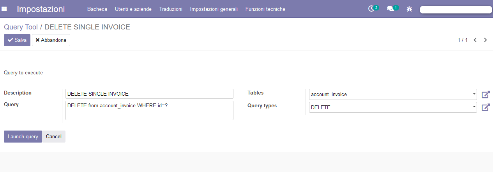

Useful to make db operations and for testing modules.
Add a Query function under technical settings, it allows to run query directly on current Odoo database.
It allows also to save some query and create unlimited query templates.


It supports also multiple query separated by ;
Example:
DELETE FROM fob_order;
DELETE FROM fob_po_order;
DELETE FROM account_invoice;

Use it at your own risk!
Roberto
www.robertozanardo.com